Salão de beleza na Vila Madalena
Cabelo feito sob medida para a sua textura, o seu rosto e a sua rotina. Conversa no espelho antes de cada serviço e preço fechado antes de começar.
Mechas e balayageO serviço mais agendadoA partir de R$ 480Profissionais que escutam. Produtos que respeitam o fio. Preço combinado antes da capa. É assim que o cabelo bonito acontece.

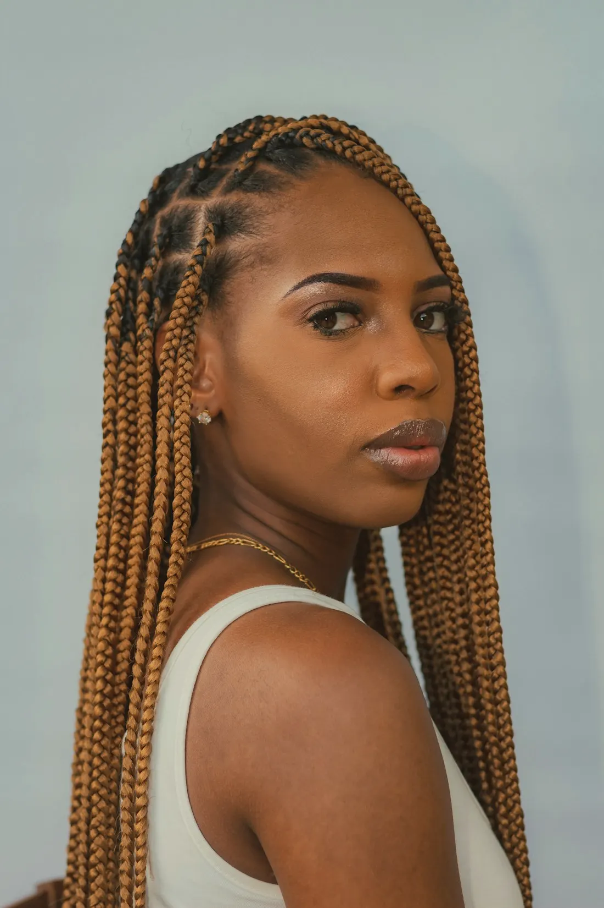
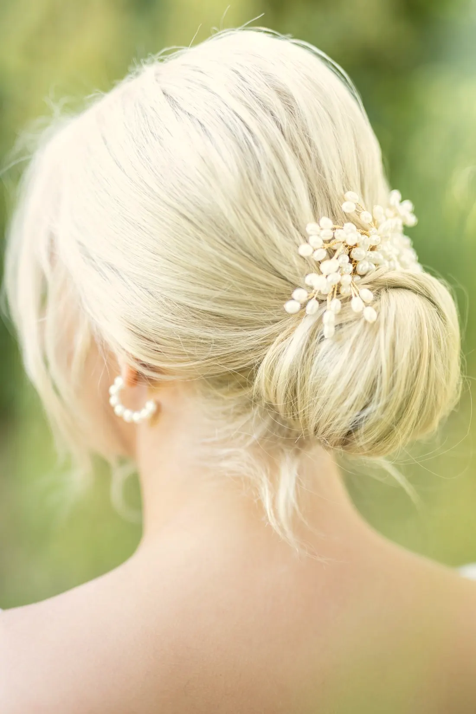
[ Problema e solução ]
Problema de cabelo de verdade pede solução de verdade: não um disfarce para o fim de semana, mas um resultado que dura.
Agendar[ O que fazemos ]
Seis frentes de trabalho, cada uma com a sua especialista. Os preços são de referência e o valor final é fechado antes de começar.
Todos os preços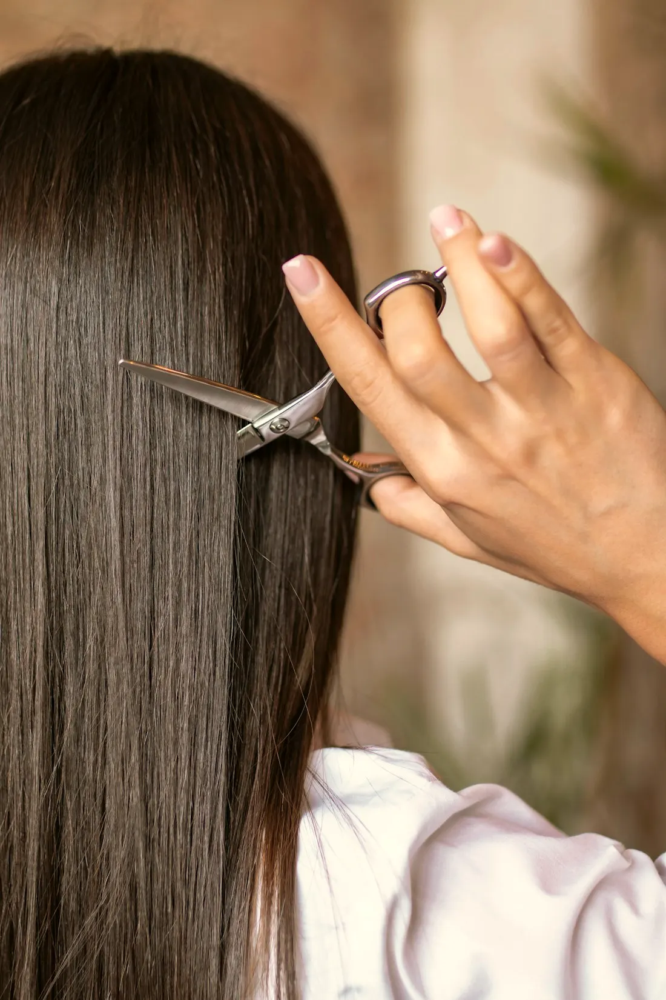
Corte e escova
- Conversa
- Corte
- Escova
a partir de R$ 45
[ Corte e finalização ]
Corte e escova
Corte desenhado para o formato do seu rosto, a textura do fio e o tempo que você tem para arrumar o cabelo de manhã.
-
Corte femininoConversa no espelho, lavagem, corte e finalização simples.1h a partir deR$ 120
-
Corte e escova longaPara cabelo abaixo do ombro: corte em camadas e escova modelada.1h30 a partir deR$ 165
-
Escova modeladao mais pedidoLavagem, protetor térmico e ondas com escova redonda ou babyliss.1h a partir deR$ 95
-
Franja e pontasAcerto da franja ou só das pontas, sem lavagem.20 min R$ 45
Cor e mechas
- Diagnóstico
- Clareamento
- Tonalização
a partir de R$ 150
[ Coloração ]
Cor e mechas
Mechas à mão livre, balayage e cor de raiz com teste de mecha antes. O valor final sai antes de abrir o primeiro pote.
-
Coloração de raizTeste de mecha, cor na raiz até 3 cm, lavagem e secagem.Teste de mecha 48h antes1h30 a partir deR$ 180
-
Mechas e balayageo mais pedidoDiagnóstico, clareamento à mão livre, tonalização e escova.Teste de mecha 48h antes4h a partir deR$ 480
-
Tonalização (gloss)Corrige o tom e devolve o brilho entre uma mecha e outra.Teste de mecha 48h antes1h a partir deR$ 150
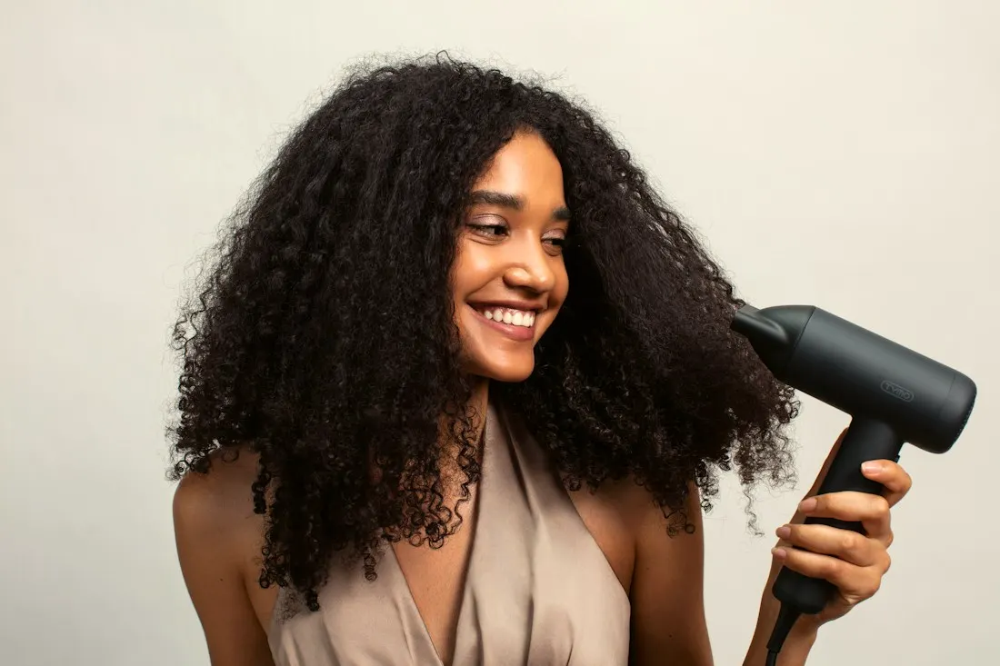
Cachos e tranças
- Leitura do cacho
- Corte a seco
- Difusor
a partir de R$ 90
[ Textura natural ]
Cachos e tranças
Corte a seco cacho por cacho, finalização que você repete em casa e tranças box braids feitas pela Júlia.
-
Corte a seco para cachosCorte cacho por cacho com o cabelo seco, lavagem e finalização com difusor.1h30 a partir deR$ 170
-
Finalização de cachosLavagem, creme e gel na medida do seu fio e secagem com difusor.1h a partir deR$ 90
-
Box braidsTranças soltas com fibra hipoalergênica, do comprimento que você escolher.5h a partir deR$ 420
Tratamentos
- Lavagem
- Máscara
- Selagem
a partir de R$ 130
[ Saúde do fio ]
Tratamentos
Hidratação, reconstrução e alinhamento sem formol, com produtos de registro na Anvisa e vapor no lavatório.
-
Hidratação e escovaMáscara de tratamento com vapor e escova no fim.1h15 a partir deR$ 140
-
ReconstruçãoPara fio quebradiço depois de química ou descoloração.1h R$ 130
-
Alinhamento sem formolTeste de mecha, produto com registro na Anvisa e escova de selagem.Teste de mecha 48h antes3h a partir deR$ 350
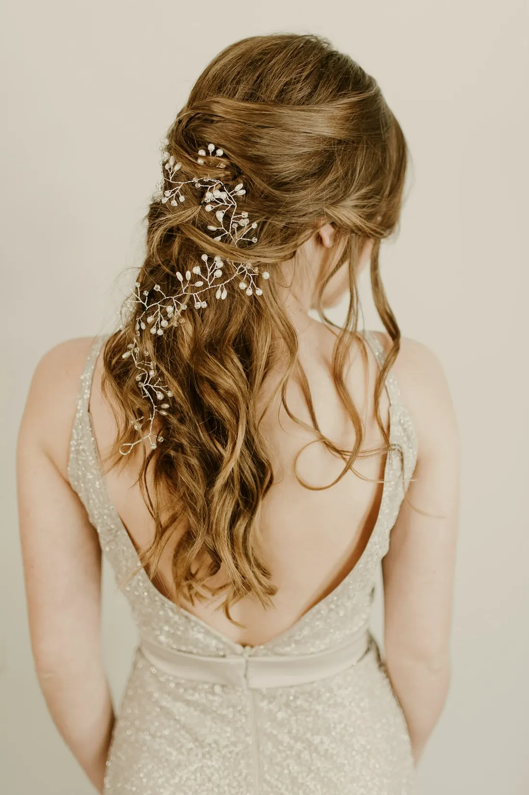
Penteados e noivas
- Prova
- Penteado
- Retoque
a partir de R$ 180
[ Dias especiais ]
Penteados e noivas
Prova do penteado antes do grande dia, preso, semipreso ou solto, e atendimento no salão ou no local da festa.
-
Penteado para eventoProva da ideia por foto antes do dia, preso ou semipreso.1h30 a partir deR$ 180
-
Noiva: prova e diaProva completa uma semana antes, penteado no dia e kit de retoque.4h a partir deR$ 950
Unhas, sobrancelha e maquiagem
- Preparo
- Aplicação
- Acabamento
a partir de R$ 55
[ Acabamento ]
Unhas, sobrancelha e maquiagem
Alicate esterilizado em autoclave, design de sobrancelha que respeita o seu desenho e maquiagem para festa.
-
Pé e mãoManicure e pedicure na mesma visita, com escalda-pés.1h30 R$ 85
-
Esmaltação em gelPreparo da unha, gel em três camadas e cabine de secagem.1h R$ 110
-
Design de sobrancelhaMapeamento do rosto e limpeza na pinça, sem afinar o desenho natural.30 min R$ 55
-
Maquiagem socialPele, olhos e boca para festa ou formatura. Cílios postiços inclusos.1h a partir deR$ 180
- Pagamento
- Pix, débito e crédito. Mechas, balayage, tranças e alinhamento em até 3 vezes sem juros no crédito.
- Valores "a partir de"
- O valor "a partir de" muda com o comprimento e o volume do cabelo e é fechado no diagnóstico, antes de começar.
- Cancelamento e remarcação
- Sem custo até 24 horas antes. Ver todas as políticas
[ Por que a Mecha ]
Cabelo bonito com atendimento sem pressa, produtos profissionais e cuidado que continua quando você vai para casa.
AgendarFeito com calma
Agenda com folga entre um horário e outro, para ninguém ser atendida correndo.
Produtos de verdade
Linhas profissionais com registro na Anvisa, escolhidas para cada tipo de fio.
- Hidratação
- Uso profissional
- Sem formol

1.200+
Atendimentos por mês, entre corte, cor, cachos e penteados.
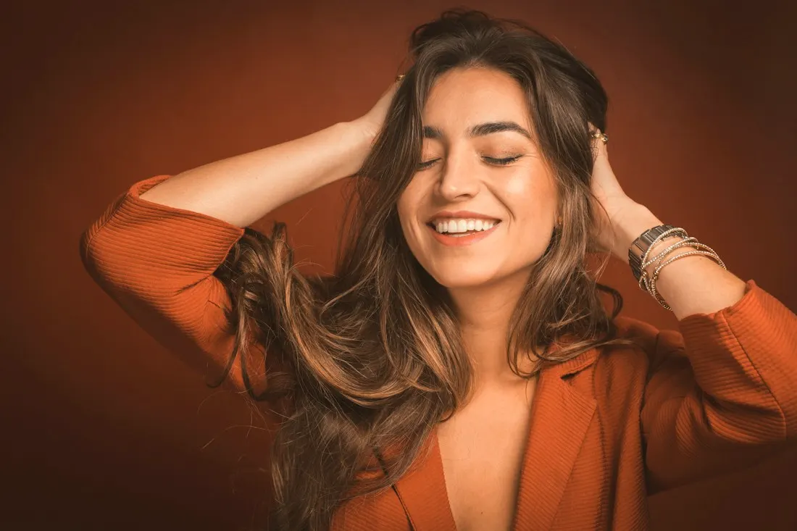
Mecha
O cuidado continua em casa
Você sai com a dica de finalização, os produtos certos e a data sugerida da volta.
- Manter
- Nutrir
- Voltar
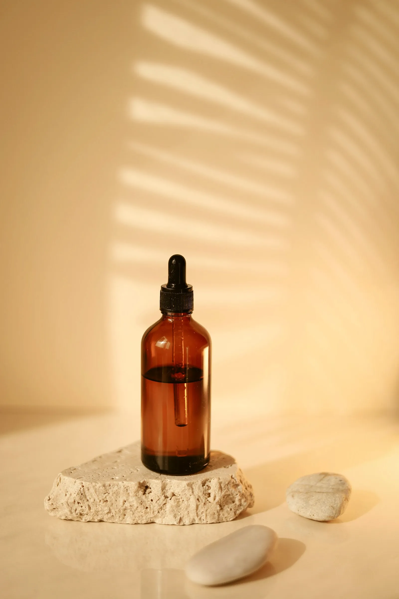
94%
Das clientes voltam em até três meses.
Toda visita começa por uma conversa no espelho.
Fizeram o teste de mecha uma semana antes e o tom ficou exatamente o da foto que eu levei. Três meses depois ninguém percebe a raiz.
Mariana CastroMechas e balayage
Avaliações de exemplo no formato das do Google. Fotos ilustrativas.
[ Como funciona ]
Toda visita na Mecha segue o mesmo caminho, pensado em volta de você e do seu cabelo.
Agendar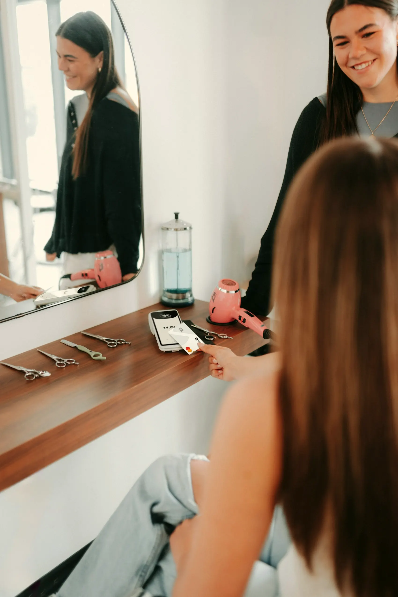
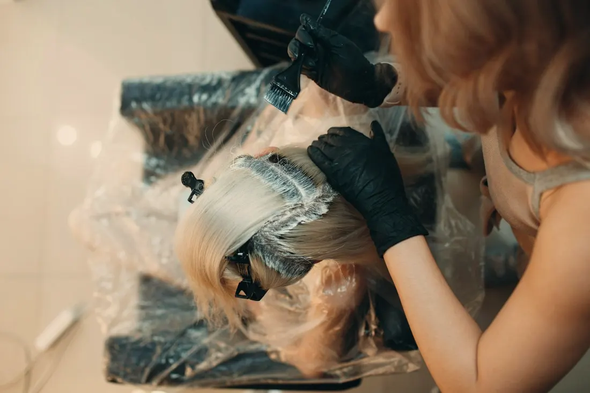
Você chega, toma um café e conta o que quer. A profissional olha o fio, faz o teste quando há química e fecha o valor antes de começar.
[ Tendências da estação ]
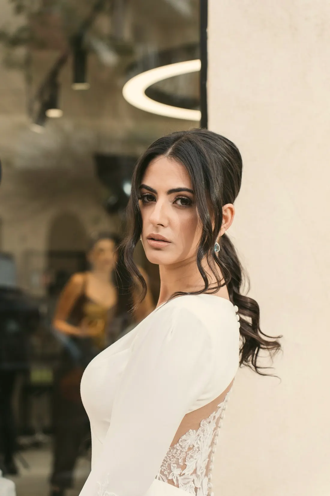
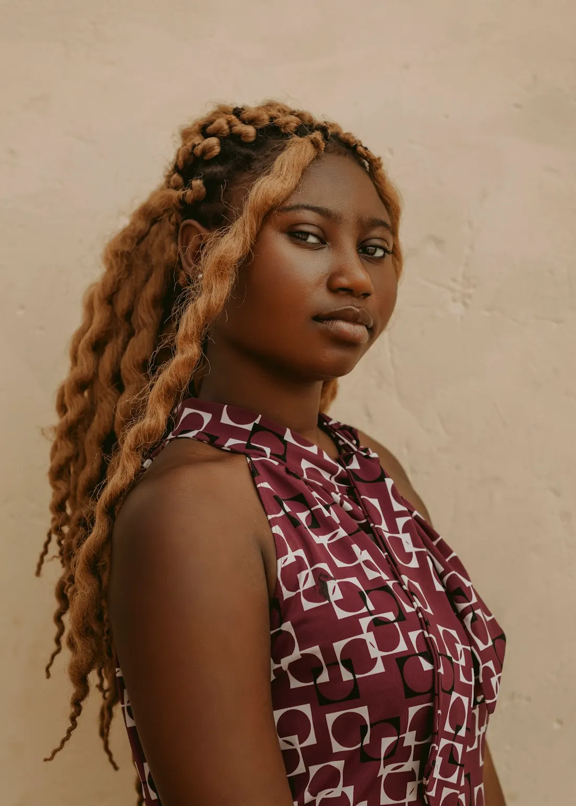
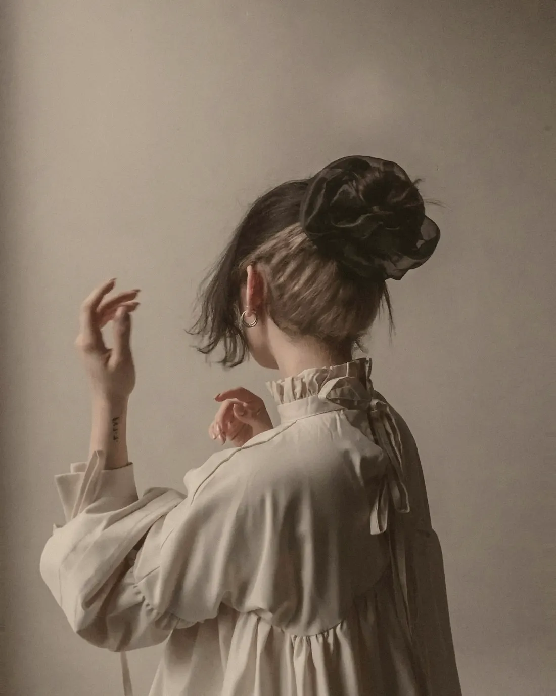
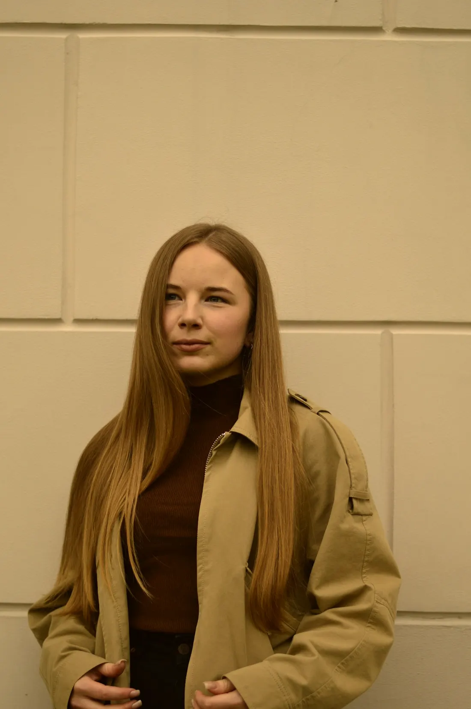
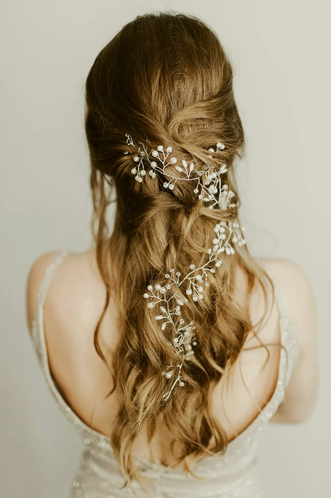
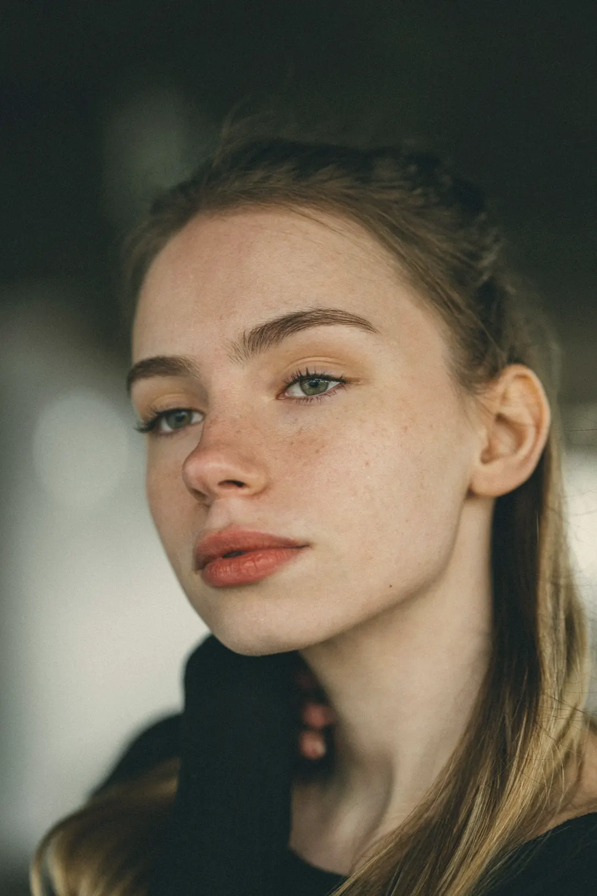
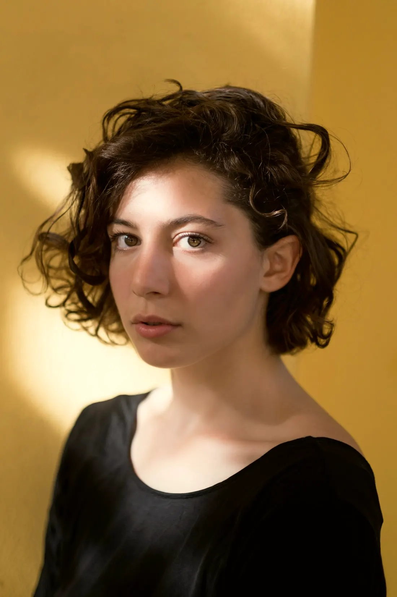
Referências para a conversa no espelho. A profissional adapta cada uma ao seu fio e ao seu rosto.
[ Resultados reais ]
Trabalhos da equipe e o dia a dia do salão, separados por categoria. Toque numa foto para ver maior.
Agendar[ No Instagram ]
@mecha.salao
Mecha Salão
- publicações
- 412
- seguidores
- 18,6 mil
- seguindo
- 210
Salão de beleza na Vila Madalena. Preço combinado antes de começar.
Seguir no Instagram[ Dúvidas comuns ]
Respostas curtas para o que mais perguntam na recepção. Não achou a sua? Pergunte no WhatsApp.
Fale conoscoComo faço para marcar?
Pelo formulário no fim da página, pelo WhatsApp ou por telefone. Você escolhe a profissional ou deixa sem preferência, e a gente encaixa no primeiro horário livre.
A conversa antes do serviço é paga?
Não. A conversa no espelho faz parte de todo atendimento, e para mudanças grandes de cor dá para marcar só a avaliação, sem custo.
E se eu não gostar do resultado?
Volte dentro do prazo de garantia do serviço e a mesma profissional ajusta sem custo o que não ficou como combinado.
Quanto tempo leva cada serviço?
Corte leva cerca de uma hora, escova de 45 minutos a uma hora, mechas de três horas e meia a quatro horas e meia e tranças de quatro a seis horas. O tempo aparece em cada serviço.
Posso levar uma foto de referência?
Deve. A foto ajuda a conversa, e a profissional explica o que dá para fazer no seu fio e o que precisa de mais de uma sessão.
Vocês atendem sem hora marcada?
Só se houver cadeira livre. Cor, tranças e penteados precisam de tempo reservado, então vale ligar antes.
Quais produtos vocês usam?
Linhas profissionais com registro na Anvisa, escolhidas para cada tipo de fio. A profissional mostra o rótulo antes de qualquer química.
[ Políticas da casa ]
Agendamento
Peça pelo formulário, WhatsApp ou telefone. Confirmamos em até uma hora no horário de funcionamento e lembramos na véspera. Serviços acima de R$ 300 pedem sinal de 30% via Pix, abatido no valor final.
Atraso
Tolerância de 15 minutos. Depois disso o serviço pode ser reduzido para caber no horário ou remarcado, conforme a agenda da profissional.
Cancelamento e remarcação
Sem custo até 24 horas antes, pelo WhatsApp. Com menos de 24 horas, o sinal vira crédito para uma nova data em até 60 dias. Duas faltas sem aviso pedem sinal em todos os próximos horários.
Garantia dos serviços
Ajuste sem custo com a mesma profissional quando algo não ficou como combinado no espelho: corte, escova e sobrancelha em até 7 dias; cor, mechas, gloss e alinhamento em até 15 dias; tranças em até 5 dias; esmaltação em gel em até 5 dias. Não cobre mudança de ideia sobre o resultado combinado.
Coloração e químicaAtenção
Coloração, mechas, tonalização, alinhamento e henna só depois do teste de mecha e de sensibilidade, feito 48 horas antes para quem nunca fez aqui. Avise alergias, gestação, medicamentos e química feita fora do salão nos últimos 6 meses. Se o fio não aguentar o processo, a profissional explica o motivo e propõe outro caminho.
Pagamento
Pix, débito e crédito, com mechas, balayage, tranças e alinhamento em até 3 vezes sem juros. Os valores "a partir de" dependem do comprimento e do volume e são fechados na conversa, antes do serviço.
[ Vamos começar ]
Escolha o serviço, a profissional, o dia e o horário. O pedido segue pronto pelo WhatsApp e confirmamos em até uma hora.